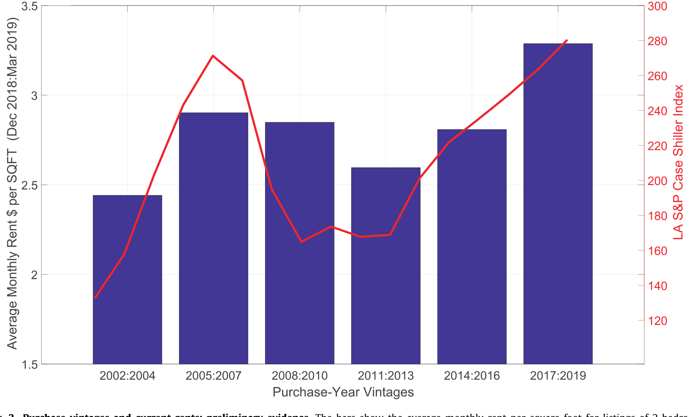
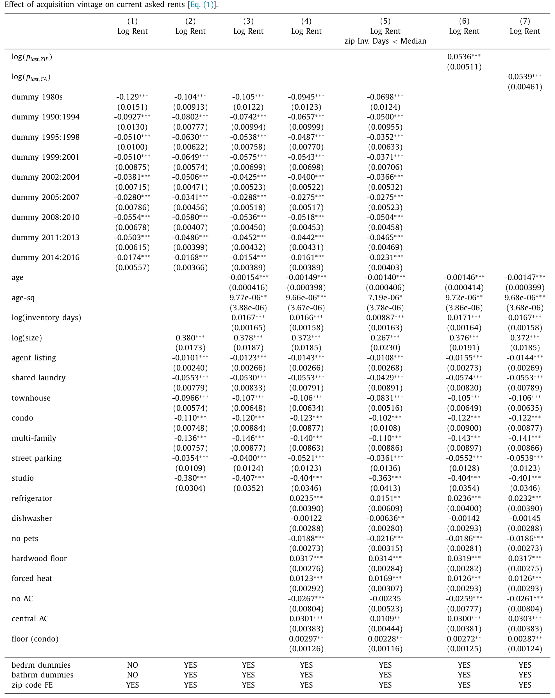
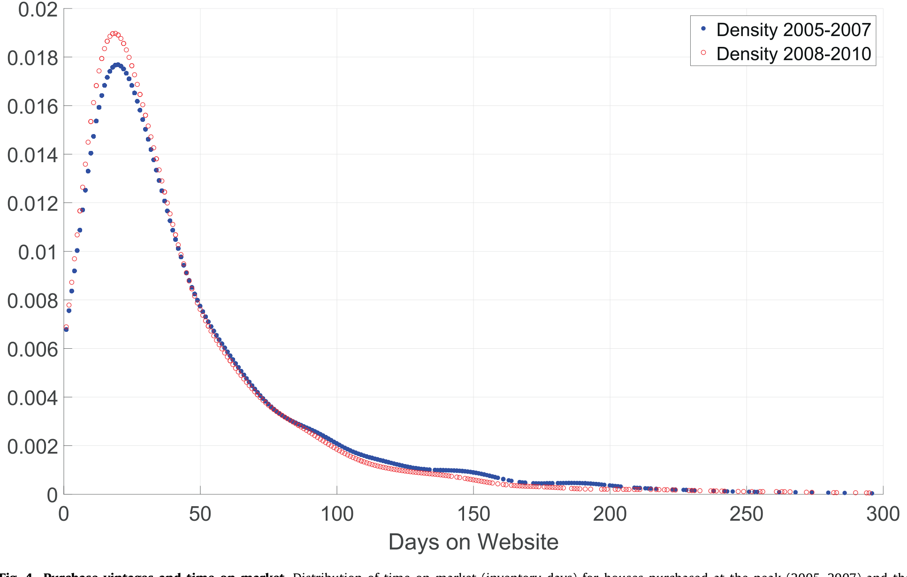
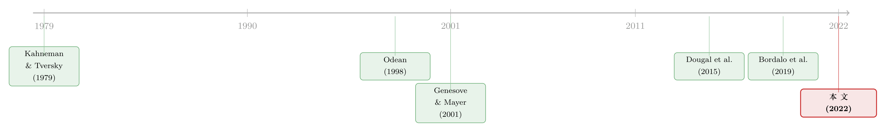

把十年前的房价，刻进今天的房租里
本文读的是 Giacoletti & Parsons (2022, Journal of Financial Economics)：在加州 4.3 万套出租房里，那些在 2005–2007 房价高点买入的房子，今天的租金比在 2008–2010 低谷买入的房子高出 2–3%。房子本身、房东本身都解释不了这个差，作者把它命名为 peak-bust rental spread（峰谷租金价差），并用一个简单的定租模型，把它拆给「参照点依赖」和「扭曲信念」两种机制。
1 一个看似无关紧要的提问
先设想一个再普通不过的场景。房东接到现住户的退租通知，下一个租客还没来，她要给这套房子标一个新的月租。她该怎么定？
像任何零售商一样，她面对一个权衡：要价高一点，一旦租出去收入就更多；可要价太高，房子就更可能空在那里。最优租金，就是在这两个边际效应之间找平衡。这是教科书里的理性基准。
但接着，一个自然的问题是——她「上一次买下这套房子」花了多少钱，重要吗？
按理说不该重要。那是十几年前的一笔历史交易，钱早就付掉了，它既不改变今天这套房子的品质，也不改变今天这片街区的租客需求。租金应该只盯着「眼下这套房子能提供什么」，而不是「当年我为它付了多少」。一个完全理性的房东，理应把那个早已沉没的购入价彻底忘掉。
这篇论文要告诉你的，恰恰是房东没有忘。而且忘不掉的程度，大到可以用一个干净的数字量出来。
2 把「时机」从「房子」里剥出来
这里有一个绕不开的陷阱：在房价高点买房的人，会不会本来买的就是更好的房子？如果「买得贵」只是因为「房子真的好」，那高租金就一点都不奇怪，根本轮不到行为金融来解释。
作者的识别策略 (identification strategy)，核心就是绕开这个陷阱。
第一步，不用单套房子的真实成交价。 早在研究波士顿公寓卖家损失厌恶的那篇经典里，Genesove and Mayer (2001) 就指出：拿个体的历史成交价当参照点，最大的麻烦是成交价里裹挟着「耐久但观测不到」的房屋质量。买得贵，可能真因为它好。
于是作者干脆把个体成交价扔掉，只留下购置年份 (acquisition vintage)——你是哪几年买的。他们做的是一组横截面回归，把当前月租回归在一串「购置年份虚拟变量」上，外加一整套标准的物业特征控制：
这里 \(R_i\) 是房源 \(i\) 的月租，\(I_{p,i}\) 是购置年份的虚拟变量向量，\(X_{ctrl,i}\) 是房屋特征，\(a_z\) 是一族邮编固定效应。识别的全部变异，只来自指数价格在不同年份的涨跌——也就是说，你的购入价高不高，不取决于你这套房好不好，而取决于你「撞上」了周期的哪个位置。任何残余的偏误，都只可能来自数千套房子组成的「大组」之间在平均不可观测特征上的差异——而不是单套房的特质。
第二步，利用加州房价的「非单调」。 这是真正关键的一步。如果租金随「距上次购买的时间」单调变化，那「陈旧价格效应」就和「近期买的房子刚装修过」纠缠在一起，分不开。但加州的价格轨迹不是单调的：2008–2010 的暴跌，紧跟在 2005–2007 的高点之后。于是只要比较「峰期 2005–07」与「谷期 2008–10」这两段时间上紧挨、价格上却天差地别的购置年份，就能把「陈旧价格」从「新近装修」里干净地拆出来。而且因为峰期那一档历史上最贵，这个比较给出的其实是效应的下界。
接着把这个对比画出来，反转就出现了。

Figure 2: Purchase vintages and current rents: preliminary evidence. The bars show the average monthly rent per square foot for listings of 2-bedroom
如图 2 所示，柱子是洛杉矶 2 卧出租房按购置年份分组的「平均每平方英尺租金」，那条线是同期洛杉矶的 S&P Case-Shiller 指数。两者几乎同步：峰期（2005–07）买入的房子租金最高，谷期（2008–13）买入的最低。横截面上「当前的租金」，竟然在跟着十几年前「买入那一刻的房价」起舞。
3 这个价差有多大，又有多顽固
把上面的回归落到数字上。

Table 2
如表 2 所示，在只控制基本特征时，峰期（5.5%）减去谷期（2.8%）等于 2.7%；和随后的 2011–2013 比也有 5 − 2.8 = 2.2%。加上全套房屋特征控制后，峰谷差仍有 5.2 − 2.8 = 2.4%。无论怎么控制，峰谷租金价差稳稳地停在 2–3% 这个区间。
另一种等价的刻画更直观：把租金直接回归在「上次购买时点的 Case-Shiller 指数对数」上，估出的敏感度是 0.054（t = 10.5）。这意味着对于像 2001–2006 那样翻倍（100%）的涨幅，十多年之后，横截面上的租金仍会因此相差约 5%。
那么，这会不会还是「房子质量」或「房东质量」在作怪？作者给出三道反驳：
- 控制变量加不动它。 加入房屋/房东质量的控制虽然大幅提升了 \(R^2\)，峰谷价差却几乎纹丝不动。套用 Oster (2019) 的检验：要让这个关系由不可观测因素解释掉，租金对不可观测变量的敏感度得比对可观测变量的高出八倍以上、而且符号还得反过来。
- 房东构成反而帮倒忙。 谷期买入的房子更可能落在公司化、专业投资者手里——而专业房东通常要价更高、而非更低。也就是说，房东构成的差异是在对冲结果，不是制造结果。
- 在市时间作证。 如果峰期房东确实在「相对房屋质量要高价」，那他们的房子就更难租出去。

Figure 4: Purchase vintages and time on market. Distribution of time on market (inventory days) for houses purchased at the peak (20 05–20 07) and the
如图 4 所示，把峰期（2005–07）与谷期（2008–10）购入房子的「在市天数（库存天数）」分布画出来，峰期房子在库里多躺了约 6%。要价被历史高价顶高了，代价就是房子更慢才租得掉——这正是「房东在用陈旧价格定租」该留下的指纹。
4 一个简单的定租模型：同一个高门槛，为何能把租金推向两个方向
这一节是全文的「机制枢纽」。两种行为故事——前景理论的损失厌恶、与流动性约束——对卖房会做出完全相同的预测（买得贵就想卖得贵），但对出租却给出相反的预测。模型的价值，就是把这个分岔点写清楚。
先看理性基准。房东选择租金 \(r\)，房子能租出去的概率记作 \(q(r)\)，它随 \(r\) 上升而下降。忽略空置时的收益，她最大化的是
$$\max_{r}\; q(r)\, r$$
要价更高，单笔收入更高，但成交概率更低——这就是第 1 节那个权衡。
真正改变结论的，是给房东的效用引入一个门槛 \(C\)：它既可以是一个参照点 (reference point)，也可以是一条流动性约束线。当租金跌破 \(C\)，房东就感到一笔「损失」，且损失随 \(C - r\) 这个缺口的拉大而加重：
$$\max_{r}\; q(r)\, r \;-\; \mathbf{1}\{r < C\}\, L(C - r)$$
这里 \(L(\cdot)\) 是损失函数。关键在于 \(L\) 的形状，它决定了一个高的 \(C\) 究竟把房东推向更高、还是更低的租金。
- 在前景理论 (prospect theory) 下，损失函数在参照点 \(C\) 的正下方最陡。此时房东最在意的是「条件于房子租出去，把租金顶到最高」——这正是前景理论那条「损失域中风险偏好」的具体体现。面对高的 \(C\)，损失厌恶的房东会把租金定在高于基准的水平。
- 在流动性约束 (liquidity constraints) 下，缺口越大、损失函数越陡。一旦房子租不出去，房东就得自掏现金储备去填月供、税费、维护——所以她最在意的是「让房子尽量租得出去」，于是面对高的 \(C\)，她反而把租金定在低于基准的水平，为「彻底租不出去」这个更糟的状态对冲。
这就是分岔点：同一个高门槛 \(C\)，损失厌恶把租金往上推，流动性约束把租金往下压。
模型还顺手解决了一个更深的问题。在卖房语境里，Genesove and Mayer (2001) 发现卖家不愿把要价标到购入价以下，这既能用前景理论解释，也能用流动性约束解释（Stein (1995) 那条首付约束），两者纠缠不清。但在出租语境里，二者的支付结构正好相反——出租房是纯金融资产，而自住房还附带消费效用——于是租金市场天然成了一把能把两种机制分开的尺子。
5 把数据塞进这把尺子：杠杆，与「就算不缺钱也忘不掉」
怎么在数据里区分损失厌恶和流动性动机？作者比较购买时贷款价值比 (loan-to-value, LTV) 不同、但购入价相同的房东。
逻辑很清楚：低杠杆房东的全部月供义务通常低于市场租金，损失函数对他几乎不起作用；高杠杆房东则大多在月度账面上「亏着」。前景理论预测高 LTV 组要价更高，流动性约束预测高 LTV 组要价更低——方向相反。
结果是：在控制房屋与房东质量后，几乎不用杠杆的房东比高 LTV 组少要约 5%。方向站在前景理论这一边。作者再补一刀反驳流动性约束：按邮编收入或月租水平把样本切开，在富裕地区、在贵房子里，峰谷价差至少一样大——如果是流动性约束在主导，本该恰恰相反。
但真正让故事完整的，是第二种机制：扭曲信念 (distorted beliefs)。房东未必清楚自己房子的真实品质，于是会用历史价格来改进估计——可他们高估了那个陈旧历史价格的信息含量。它的识别条件很苛刻：要找到一种情形，连参照点依赖和流动性约束都不该起作用，价格却依然影响租金。作者发现，即便只看那些几乎全款、低杠杆买入的房子，当前租金在不同购置年份之间依然有别，峰谷价差和全样本几乎一样大。既然这批房东根本不存在高到能触发损失厌恶的门槛，那剩下能解释的，就只有「他们真的把那个老价格当成了关于房子价值的信号」。
于是作者的总判断是：这两套机制各自吃掉不同的、有时正交的变异，对同一个房东可能同时成立。实证上，把两个效应一起放进回归，各自的边际效应几乎都不被对方改变——它们基本独立。
6 文献脉络
把这篇论文放回它生长的那条藤上，会看得更清楚。
源头是 Kahneman and Tversky (1979) 的前景理论：人按相对于参照点的得失、而非绝对财富水平来感知效用，并在损失域表现出风险偏好。金融学随后把这套框架落到一连串「同一市场里前后两笔交易」上——Odean (1998) 的处置效应（买股票再卖股票）、Genesove and Mayer (2001) 的房屋买卖、Dougal et al. (2015) 在不同时点发债时的「锚定在信用利差上」。

但这些都是「市场内 (intramarket)」效应：参照点在同一个市场里建立、又在同一个市场里发挥作用。本文最锋利的一刀，是证明参照点能跨市场起作用——在「买卖」语境里建立的参照（购入价、月供），竟然能影响「出租」这个完全不同的市场的定价。它顺带与 Birru (2015) 形成对照：后者发现当后续交易是同类型时，像拆股那样「变换参照点」能彻底消掉处置效应；而本文说明，当交易类型一变（先买、再租），主体仍可能把那个变换过的参照点当回事。
另一条平行的支线是「经历塑造决策」：Malmendier and Nagel (2011, 2016) 证明亲历过的宏观经历会长久影响风险承担与通胀预期；Bordalo et al. (2019) 则在租客一侧给出「记忆与参照价格」的证据。本文把镜头转向房东一侧，并强调一个「长记忆效应 (long memory effect)」——十年、甚至二十年前的市场状态，今天还在悄悄定价。研究指数层面参照点这件事，与 Bracke and Tenreyro (2016) 在卖房市场里做的如出一辙。
7 评论与延伸（Q&A + 研究方向）
(a) 几个可能的疑问
Q：这和「卖家损失厌恶」（Genesove-Mayer）到底有什么新意？
新意在「跨市场」与「可分离」。Genesove-Mayer 是买房→卖房的市场内效应，且损失厌恶与流动性约束在卖房语境里给出相同预测、无法分开。本文把场景换成买房→出租：出租房是纯金融资产，两种机制对租金给出相反预测，于是 LTV 这把尺子第一次能把它们拆开。
Q：用「购置年份」而不是个体成交价，会不会反而把效应做小了？
会，而且作者是有意为之。只用指数变异意味着丢掉了个体价格里的信息，估计被稀释成「大组平均」之间的比较——这换来的是干净：残余偏误只可能来自数千套房子的平均不可观测特征之差。所以
2–3%更应被读作一个下界。
Q：会不会就是「买得贵的房子本来更好」？
这正是核心威胁，作者用三招回应：控制变量大幅提升 \(R^2\) 却撼不动价差（Oster 检验要求不可观测敏感度高出八倍且反号）；房东构成的差异在对冲而非制造结果；峰期房子在市时间反而长约
6%。三者都指向「陈旧价格」而非「真实质量」。
Q：前景理论和扭曲信念，最后到底是哪一个？
作者诚实地说「两个都有，且基本独立」。前景理论由「高 LTV→高租金、且富裕区/贵房子里价差不减」支撑；扭曲信念由「连低杠杆全款房东也有同样大的价差」支撑——后者排除了门槛机制，只剩「把老价格当信号」能解释。把两者一起放进回归，边际效应互不影响。
Q：为什么加州是个「近乎理想」的实验场？
因为加州房价非单调：2008–2010 暴跌紧跟 2005–2007 高点。这让「陈旧价格效应」能从「近期购入＝刚装修」里干净剥离。再加上 Proposition 13 把房产税锚定在历史购入价上（每年增值不超过 2%），历史价格会通过月供和税负实实在在进入房东的成本账。
Q：这点微观偏差，会不会在加总后被竞争抹平？
不一定。作者指出方向取决于历史指数轨迹：价格长期下跌的区域，向后看的房东会让平均租金偏高；上涨区域则偏低。且房地产市场并不完全竞争，一个房东因参照点或扭曲信念造成的定价偏差，可能通过竞争外溢到邻近房子，反而放大原始效应。这一节作者明说留给未来研究。
(b) 几个可能的研究问题与提案
1. 把「长记忆」搬到公司债一级市场。 【经济故事】如果房东会被十年前的购入价锚住，那债券发行人/承销商会不会被「上一次发债时的信用利差」锚住？Dougal et al. (2015) 已证明「锚定在信用利差上」存在，但还没人用「发行年份的指数利差 vs 个体历史利差」做峰谷式的剥离。 【可行性】中。需 Mergent FISD + TRACE 构造发行人层面的「发行年份」面板，识别上靠利差周期的非单调性，类比本文的 vintage 设计。难点是发行人异质性远比住宅大。
2. 外资持有人会不会有「更长的记忆」？ 【经济故事】本文证明参照点能跨市场、跨十年。一个自然延伸：不同类型的持有人，记忆长短是否不同？外资机构相比本土散户，是否更不容易被本地历史价格锚住，从而成为「记忆短」的一方，在竞争中纠正本地房东？ 【可行性】中。住宅市场缺持有人国籍数据，但公司债可借 eMAXX/13F 区分外资与本土持有人，检验「持有人构成」是否调节历史价格对当前定价的影响。
3. 陈旧价格与流动性：在市时间是不是被低估的渠道？
【经济故事】本文用 6% 的在市时间差作为辅助证据，但没把它做成主结果。如果陈旧价格系统性地拉长库存，那它就是一条把「行为偏差」翻译成「市场流动性」的暗线。
【可行性】高。本文数据已含 inventory days，可直接把「在市时间」作被解释变量，按 vintage、LTV、地区收入分层回归，量化定价偏差对流动性的拖累。
4. Proposition 13 作为外生「成本锚」的清晰实验。 【经济故事】加州房产税被法律锚定在历史购入价上（≤2%/年增值），这给「月供＋税负＝参照点 \(C\)」提供了一个外生的、跨州不存在的成本楔子。比较加州与无类似条款的州，能不能把「参照点来自真实现金成本」与「纯心理锚定」进一步分开？ 【可行性】中。需跨州租金与购置年份数据（数据收集是主要门槛），识别靠 Prop 13 这一制度断点，是一个干净的 DiD 思路。
8 我的判断
这篇论文最漂亮的地方，是它把一个看似「软」的行为故事，钉在了一个极硬的识别设计上：不用个体成交价、只用指数变异，再借加州房价的非单调把「陈旧价格」从「近期装修」里剥出来，最后用 LTV 这把尺子把损失厌恶和流动性约束分到天平两端。2–3% 的峰谷价差、0.054（t=10.5）的指数敏感度、6% 的在市时间差——量级都不大，但稳，而且方向自洽。对资产定价研究者，它真正的贡献是那句「参照点能跨市场、跨十年地起作用」：这把行为金融从「同一市场内前后两笔交易」的舒适区里推了出来。
担忧有两处。其一，识别只到「大组平均特征」这一层——作者诚实地承认，他们无法排除峰期与谷期房子在某种平均不可观测维度上的系统性差异（比如建筑年代风格、社区世代更替），尽管 Oster 检验把这种可能压得很低。其二，前景理论与扭曲信念「都有、且独立」这个结论，虽然稳健，却也意味着论文没能给出一个唯一的机制——它更像是排除法之后剩下的两个嫌疑人，而非当庭指认的一个。
后续我最想看到的，是把这条「长记忆」从横截面推向加总：当一个地区的历史价格轨迹整体向下，向后看的房东究竟在多大程度上抬高了该地区的平均租金？以及——这是作者自己留的口子——一个有长记忆的房东，会不会通过竞争把没有长记忆的邻居也「教坏」。如果这条外溢链条成立，那么十年前的一次房价泡沫，可能至今还在每个月悄悄向租客收税。
参考文献
- Birru, J. (2015). Confusion of confusions: a test of the disposition effect and momentum. Review of Financial Studies 28(7), 1849–1873.
- Bordalo, P., Gennaioli, N., Shleifer, A. (2019). Memory and reference prices: an application to rental choice. American Economic Review: Papers & Proceedings 109, 572–576.
- Bracke, P., Tenreyro, S. (2016). History Dependence in the Housing Market. Working Paper.
- Dougal, C., Engelberg, J., Parsons, C.A., Van Wesep, E.D. (2015). Anchoring on credit spreads. Journal of Finance 70(3), 1039–1080.
- Genesove, D., Mayer, C. (1997). Equity and time to sale in the real estate market. American Economic Review 87(3), 255–269.
- Genesove, D., Mayer, C. (2001). Loss aversion and seller behavior: evidence from the housing market. Quarterly Journal of Economics 116(4), 1233–1260.
- Giacoletti, M., Parsons, C.A. (2022). Peak-Bust rental spreads. Journal of Financial Economics 143(2), 504–526.
- Kahneman, D., Tversky, A. (1979). Prospect theory: an analysis of decision under risk. Econometrica 47(2), 263–292.
- Malmendier, U., Nagel, S. (2011). Depression babies: do macroeconomic experiences affect risk taking? Quarterly Journal of Economics 126(1), 373–416.
- Malmendier, U., Nagel, S. (2016). Learning from inflation experiences. Quarterly Journal of Economics 131(1), 53–87.
- Odean, T. (1998). Are investors reluctant to realize losses? Journal of Finance 53(5), 1775–1798.
- Oster, E. (2019). Unobservable selection and coefficient stability: theory and evidence. Journal of Business & Economic Statistics 37(2), 187–204.
- Stein, J. (1995). Prices and trading volume in the housing market: a model with downpayment constraints. Quarterly Journal of Economics 110(2), 379–406.
（延伸阅读：关于从真实交易中「反推」前景理论偏好，可参见《用真金白银投出来的前景理论——从基金资金流里「反推」投资者偏好》；关于房屋定价的不确定性如何传导到信贷，可参见《房子越「难定价」，越借不到钱》。）